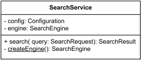
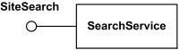

UML Class Diagrams Reference
| Notation | Description | ||||||||||||||||||
|---|---|---|---|---|---|---|---|---|---|---|---|---|---|---|---|---|---|---|---|
| Class | |||||||||||||||||||
|
Class Customer - details suppressed. |
A class is a classifier which describes a set of objects that share the same
A class is shown as a solid-outline rectangle containing the class name, and optionally with compartments separated by horizontal lines containing features or other members of the classifier. |
||||||||||||||||||
|
Class SearchService - analysis level details |
When class is shown with three compartments, the middle compartment holds a list of
attributes and the bottom compartment holds a list of operations.
Attributes and operations should be left justified in plain face,
with the first letter of the names in lower case.
|
||||||||||||||||||
|

Class SearchService - implementation level details. The createEngine is static operation. |
Middle compartment holds attributes and the bottom one holds operations. | ||||||||||||||||||
|
Class SearchService - attributes and operations grouped by visibility. |
Attributes or operations may be grouped by visibility. A visibility keyword or symbol in this case can be given once for multiple features with the same visibility. | ||||||||||||||||||
|
Math is utility class - having static attributes and operations (underlined) |
Utility is class that has only class scoped static attributes and operations. As such, utility class usually has no instances. |
||||||||||||||||||
| Abstract Class | |||||||||||||||||||
|
Class SearchRequest is abstract class. |
Abstract class was defined in UML 1.4.2 as class that can't be directly instantiated. No object may be a direct instance of an abstract class. UML 2.4 mentions abstract class but provides no definition. We may assume that in UML 2.x abstract class does not have complete declaration and "typically" can not be instantiated. The name of an abstract class is shown in italics. |
||||||||||||||||||
| Nested Classifiers | |||||||||||||||||||
|
Class LinkedList is nesting the Element interface. The Element is in scope of the LinkedList namespace. |
A class or interface could be used as a namespace for various classifiers including other classes, interfaces, use cases, etc. This nesting of classifier limits the visibility of the classifier defined in the class to the scope of the namespace of the containing class or interface. In obsolete UML 1.4.2 a declaring class and a class in its namespace may be shown connected by a line, with an "anchor" icon on the end connected to a declaring class (namespace). An anchor icon is a cross inside a circle. UML 2.x specifications provide no explicit notation for the nesting by classes. Note, that UML's 1.4 "anchor" notation is still used in one example in UML 2.4.x for packages as an "alternative membership notation". |
||||||||||||||||||
| Class Template | |||||||||||||||||||

Template class Array and bound class Customers. The Customers class is an Array of 24 objects of Customer class. |
UML classes could be templated or bound. The example to the left shows bound class Customers with substitution of the unconstrained parameter class T with class Customer and boundary parameter n with the integer value 24. |
||||||||||||||||||
| Interface | |||||||||||||||||||
|
Interface SiteSearch. |
An interface is a classifier that declares of a set of coherent public features and obligations. An interface specifies a contract. In UML 1.4 interface was formally equivalent to an abstract class with no attributes and no methods and only abstract operations. An interface may be shown using a rectangle symbol with the keyword «interface» preceding the name. |
||||||||||||||||||

Interface Pageable |
The obligations that may be associated with an interface are in the form of various kinds of constraints (such as pre- and postconditions) or protocol specifications, which may impose ordering restrictions on interactions through the interface. |
||||||||||||||||||
|

Interface SiteSearch is realized (implemented) by SearchService. |
Interface participating in the interface realization dependency is shown as a circle or ball, labeled with the name of the interface and attached by a solid line to the classifier that realizes this interface. | ||||||||||||||||||

Interface SiteSearch is used (required) by SearchController. |
The usage dependency from a classifier to an interface is shown by representing the interface by a half-circle or socket, labeled with the name of the interface, attached by a solid line to the classifier that requires this interface. | ||||||||||||||||||
| Object | |||||||||||||||||||
 could have no name - anonymous.")
Anonymous instance of the Customer class. |
Object is an instance of a class or an interface. Object is not a UML element by itself. Objects are rendered as instance specifications, usually on object diagrams. Class instance (object) could have no name, be anonymous. |
||||||||||||||||||
 could have no associated classifier.")
Instance newPatient of the unnamed or unknown class. |
In some cases, class of the instance is unknown or not specified. When instance name is also not provided, the notation for such an anonymous instance of an unnamed classifier is simply underlined colon - :. |
||||||||||||||||||
|
Instance checkAcct of the Account interface. |
Interface instance (object) could have both name and associated classifier. |
||||||||||||||||||
 could have a name, class and namespace (package) specified.")
Instance front-facing-cam of the Camera class from android.hardware package. |
Class instance (object) could have instance name, class and namespace (package) specified. | ||||||||||||||||||

Instance orderPaid of the Date class |
If an instance has some value, the value specification is shown either after an equal sign ('=') following the instance name, or without the equal sign below the name. |
||||||||||||||||||

Instance newPatient of the Patient class |
Slots are shown as structural features with the feature name followed by an equal sign ('=') and a value specification. Type (classifier) of the feature could be also shown. |
||||||||||||||||||
| Data Type | |||||||||||||||||||

DateTime data type |
A data type is a classifier - similar to a class - whose instances are identified only by their value. A data type is shown using rectangle symbol with keyword «dataType». |
||||||||||||||||||

Structured data type Address |
A data type may contain attributes and operations to support the modeling of structured data types. |
||||||||||||||||||

Attributes of the Patient class are of data types Name, Gender, DateTime, Address and Visit. |
When data type is referenced by, e.g., as the type of a class attribute, it is shown simply as the name of the data type. |
||||||||||||||||||
| Primitive Type | |||||||||||||||||||

Primitive data type Weight. |
A primitive type is a data type which represents atomic data values, i.e. values having no parts or structure. A primitive data type may have precise semantics and operations defined outside of UML, for example, mathematically. Standard UML primitive types include:
A primitive type has the keyword «primitive» above or before the name of the primitive type. |
||||||||||||||||||
| Enumeration | |||||||||||||||||||
|
Enumeration AccountType. |
An enumeration is a data type whose values are enumerated in the model as user-defined enumeration literals. An enumeration may be shown using the classifier notation (a rectangle) with the keyword «enumeration». The name of the enumeration is placed in the upper compartment. A list of enumeration literals may be placed, one to a line, in the bottom compartment. The attributes and operations compartments may be suppressed, and typically are suppressed if they would be empty. |
||||||||||||||||||
| Feature | |||||||||||||||||||
|
Feature overview diagram |
|||||||||||||||||||
| Association Qualifier | |||||||||||||||||||

Given a company and a social security number (SSN) at most one employee could be found. |
A qualifier is a property which defines a partition of the set of associated instances with respect to an instance at the qualified end. Qualifiers are used to model hash maps in Java, dictionaries in C#, index tables, etc. where fast access to linked object(s) is provided using qualifier as a hash key, search argument or index. A qualifier is shown as a small rectangle attached to the end of an association between the final path segment and the symbol of the classifier that it connects to. The qualifier rectangle is part of the association, not part of the classifier. A qualifier may not be suppressed. In the case in which the target multiplicity is 0..1, the qualifier value is unique with respect to the qualified object, and designates at most one associated object. |
||||||||||||||||||

Given a library and author name none to many books could be found. |
In the case of target multiplicity 0..*, the set of associated instances is partitioned into possibly empty subsets, each selected by a given qualifier instance. |
||||||||||||||||||
|
Given chessboard and specific rank and file we'll locate exactly 1 square. UML specification provides no lucid explanation of what multiplicity 1 means for qualifier. |
UML 2.4 specification is gibberish explaining multiplicity of qualifier: The multiplicity of a qualifier is given assuming that the qualifier value is supplied. The “raw” multiplicity without the qualifier is assumed to be 0..*. This is not fully general but it is almost always adequate, as a situation in which the raw multiplicity is 1 would best be modeled without a qualifier. |
||||||||||||||||||
| Operation | |||||||||||||||||||
|
Operation executeQuery is public, isPoolable - protected, getQueryTimeout - with package visibility, and clearWarnings is private. |
Operation is a behavioral feature of a classifier that specifies the name, type, parameters, and constraints for invoking an associated behavior. When operation is shown in a diagram, the text should conform to the syntax defined in UML specification. Note, that UML 2.2 to 2.4 specifications seem to have wrong nesting for operation's properties, making presence of the properties dependent on the presence of return type. The syntax provided here is non-normative and different from the one in the UML 2.4 specification: operation ::= [ visibility ] signature [ oper-properties ] Visibility of the operation is optional, and if present, it should be one of: visibility ::= '+' | '-' | '#' | '~' |
||||||||||||||||||
|
File has two static operations - create and slashify. Create has two parameters and returns File. Slashify is private operation. Operation listFiles returns array of files. Operations getName and listFiles either have no parameters or parameters were suppressed. |
Signature of the operation has optional parameter list and return specification. signature ::= name '(' [ parameter-list ] ')' [ ':' return-spec ] Name is the name of the operation. Parameter-list is a list of parameters of the operation in the following format: parameter-list ::= parameter [ ',' parameter ]* parameter ::= [ direction ] parm-name ':' type-expression [ '[' multiplicity ']' ] [ '=' default ] [ parm-properties ] Parm-name is the name of the parameter. Type-expression is an expression that specifies the type of the parameter. Multiplicity is the multiplicity of the parameter. Default is an expression that defines the value specification for the default value of the parameter. Parameter list can be suppressed. |
||||||||||||||||||

Operation setDaemon has one input parameter, while single parameter of changeName is both input and output parameter. Static enumerate returns integer result while also having output parameter - array of threads. Operation isDaemon is shown with return type parameter. It is presentation option equivalent to returning operation result as: +isDaemon(): Boolean. |
Direction of parameter is described as one of:
direction ::=
'in' | 'out' | 'inout' | 'return'
Optional parm-properties describe additional property values that apply to the parameter. parm-properties ::= '{' parm-property [ ',' parm-property ]* '}' Optional return specification is defined as: return-spec ::= [ return-type ] [ '[' multiplicity ']' ] Return type is the type of the result, if it was defined for the operation. Return specification also has optional multiplicity of the return type. |
||||||||||||||||||
|
Operation check redefines inherited operation status from the superclass. Operation getPublicKey does not change the state of the system. Operation getCerts returns ordered array of Certificates without duplicates. |
Properties of the operation are optional, and if present should follow the rule: oper-properties ::= '{' oper-property [ ',' oper-property ]* '}' oper-property ::= 'redefines' oper-name | 'query' | 'ordered' | 'unique' | oper-constraint Properties of operation describe operation in general or return parameter, and are defined as:
|
||||||||||||||||||
| Abstract Operation | |||||||||||||||||||
|
Abstract operation in UML 1.4.2 was defined as operation without implementation - "class does not implement the operation". Implementation had to be supplied by a descendant of the class. Abstract operation in UML 1.4.2 was shown with its signature in italics or marked as {abstract}. There is neither definition nor notion for abstract operation in UML 2.4. |
|||||||||||||||||||
| Constraint | |||||||||||||||||||
|
Bank account attribute constraints - non empty owner and positive balance. |
Constraint could have an optional name, though usually it is anonymous. A constraint is shown as a text string in curly braces according to the syntax: constraint ::= '{' [ name ':' ] boolean-expression '}' For an element whose notation is a text string (such as a class attribute, etc.), the constraint string may follow the element text string in curly braces. |
||||||||||||||||||
|
Account owner is either Person or Corporation, {xor} is predefined UML constraint. |
For a Constraint that applies to two elements (such as two classes or two associations), the constraint may be shown as a dashed line between the elements labeled by the constraint string in curly braces. | ||||||||||||||||||
|
Bank account constraints - non empty owner and positive balance |
The constraint string may be placed in a note symbol and attached to each of the symbols for the constrained elements by a dashed line. | ||||||||||||||||||
| Multiplicity | |||||||||||||||||||
|
Multiplicity of Players for Soccer Team class. |
Multiplicity is a definition of an inclusive interval of non-negative integers to specify the allowable number of instances of described element.
Multiplicity could be described with the following non-normative syntax rules:
Some typical examples of multiplicity bounds:
|
||||||||||||||||||
|
Customer has none to many purchases. Purchases are in specific order and each one is unique (by default). 
Data Source could have a Logger and has ordered pool of min to max Connections. Each Connection is unique (by default). |
Multiplicity options could also specify of whether the values in an instantiation of the element
should be unique and/or ordered:
If multiplicity element is multivalued and specified as ordered, then the collection of values in an instantiation of this element is sequentially ordered. By default, collections are not ordered. If multiplicity element is multivalued and specified as unique, then each value in the collection of values in an instantiation of this element must be unique. By default, each value in collection is unique. |
||||||||||||||||||
| Visibility | |||||||||||||||||||
|
Operation executeQuery is public, isPoolable - protected, getQueryTimeout - with package visibility, and clearWarnings is private. |
Visibility allows to constrain the usage of a named element, either in namespaces or in access to the element. It is used with classes, packages, generalizations, element import, package import. UML has the following types of visibility:
If a named element is not owned by any namespace, then it does not have a visibility. |
||||||||||||||||||
| Association | |||||||||||||||||||
|
Association is a relationship between classifiers which is used to show that instances of classifiers could be either linked to each other or combined logically or physically into some aggregation. It is normally drawn as a solid line connecting associated classifiers. |
|||||||||||||||||||
|
Job is associated with Year. |
Binary association relates two typed instances. It is normally rendered as a solid line connecting two classifiers, or a solid line connecting a single classifier to itself (the two ends are distinct). The line may consist of one or more connected segments. |
||||||||||||||||||
|
Order of the ends and reading: Car - was designed in - Year |
A small solid triangle could be placed next to or in place of the name of binary association (drawn as a solid line) to show the order of the ends of the association. The arrow points along the line in the direction of the last end in the order of the association ends. This notation also indicates that the association is to be read from the first end to the last end. | ||||||||||||||||||

Ternary association Design relating three classifiers. |
Any association may be drawn as a diamond (larger than a terminator on a line) with a solid line for each association end connecting the diamond to the classifier that is the end’s type. N-ary association with more than two ends can only be drawn this way. | ||||||||||||||||||
| Aggregation | |||||||||||||||||||
|
Search Service has a Query Builder using shared aggregation |
Aggregation (aka shared aggregation) is shown as binary association decorated with a hollow diamond as a terminal adornment at the aggregate end of the association line. | ||||||||||||||||||
| Composite Aggregation (Composition) | |||||||||||||||||||

Folder could contain many files, while each File has exactly one Folder parent. If Folder is deleted, all contained Files are deleted as well. |
Composite aggregation (aka composition) is a "strong" form of aggregation. Composition is depicted as binary association decorated with a filled black diamond at the aggregate (composite) end. |
||||||||||||||||||
|
Hospital has 1 or more Departments, and each Department belongs to exactly one Hospital. |
When composition is used in domain models, both whole/part relationship as well as event of composite "deletion" should be interpreted figuratively, not necessarily as physical containment and/or termination. |
||||||||||||||||||
|
Each Department has some Staff, and each Staff could be a member of one Department (or none). If Department is closed, its Staff is relieved (but excluding the "stand alone" Staff). |
Multiplicity of the composite (whole) could be specified as 0..1 ("at most one") which means that part is allowed to be a "stand alone", not owned by any specific composite. |
||||||||||||||||||
| Ownership of Association End | |||||||||||||||||||

Association end query is owned by classifier QueryBuilder and association end qbuilder is owned by association Builds itself. |
Ownership of association ends by an associated classifier may be indicated graphically by a small filled circle (aka dot). The dot is drawn at the point where line meets the classifier. It could be interpreted as showing that the model includes a property of the type represented by the classifier touched by the dot. This property is owned by the classifier at the other end. | ||||||||||||||||||

Association end qb is an attribute of SearchService class and is owned by the class. |
Attribute notation can be used for an association end owned by a class, because an association
end owned by a class is also an attribute.
This notation may be used in conjunction with the line arrow notation to make
it perfectly clear that the attribute is also an association end.
|
||||||||||||||||||
| Association Navigability | |||||||||||||||||||
|
Both ends of association have unspecified navigability. |
No adornment on the end of an association means unspecified navigability.
|
||||||||||||||||||
|
A2 has unspecified navigability while B2 is navigable from A2. |
Navigable end is indicated by an open arrowhead on the end of an association.
|
||||||||||||||||||

A3 is not navigable from B3 while B3 has unspecified navigability. |
Not navigable end is indicated with a small x on the end of an association.
|
||||||||||||||||||
|
A4 is not navigable from B4 while B4 is navigable from A4. |
|
||||||||||||||||||

A5 is navigable from B5 and B5 is navigable from A5. |
|
||||||||||||||||||

A6 is not navigable from B6 and B6 is not navigable from A6. |
|
||||||||||||||||||
| Generalization | |||||||||||||||||||

Checking, Savings, and Credit Accounts are generalized by Account. |
A Generalization is shown as a line with a hollow triangle as an arrowhead between the symbols representing the involved classifiers. The arrowhead points to the symbol representing the general classifier. This notation is referred to as the "separate target style." | ||||||||||||||||||

Checking, Savings, and Credit Accounts are generalized by Account. |
Multiple Generalization relationships that reference the same general classifier can also be connected together in the "shared target style." | ||||||||||||||||||
| Dependency | |||||||||||||||||||

Data Access depends on Connection Pool |
Dependency relationship is used on class diagrams to show usage dependency or abstraction. A dependency is generally shown as a dashed arrow between two model elements. The model element at the tail of the arrow (the client) depends on the model element at the arrowhead (the supplier). The arrow may be labeled with an optional stereotype and an optional name. |
||||||||||||||||||
| Usage | |||||||||||||||||||
|
Search Controller uses Search Engine. |
Usage is a dependency relationship in which one element (client) requires another element (or set of elements) (supplier) for its full implementation or operation. For example, it could mean that some method(s) within a (client) class uses objects (e.g. parameters) of the another (supplier) class. A usage dependency is shown as a dependency with a «use» keyword attached to it. |
||||||||||||||||||
| Create | |||||||||||||||||||
|
Data Source creates Connection |
Create is a usage dependency denoting that the client classifier creates instances of the supplier classifier. It is denoted with the standard stereotype «create». |
||||||||||||||||||
|
Account constructor creates new instance of Account |
Create may relate an instance value to a constructor for a class, describing the single value returned by the constructor operation. The operation is the client, the created instance the supplier. The instance value may reference parameters declared by the operation. |
||||||||||||||||||
| Required Interface | |||||||||||||||||||
|
Interface SiteSearch is used (required) by SearchController. |
Required interface specifies services that a classifier needs in order to perform
its function and fulfill its own obligations to its clients. It is specified by
a usage dependency
between the
classifier
and the corresponding
interface.
The usage dependency from a classifier to an interface is shown by representing the interface by a half-circle or socket, labeled with the name of the interface, attached by a solid line to the classifier that requires this interface. |
||||||||||||||||||

Interface SiteSearch is used (required) by Search Controller. |
If interface is represented using the rectangle notation, interface usage dependency is denoted with dependency arrow. The classifier at the tail of the arrow uses (requires) the interface at the head of the arrow. | ||||||||||||||||||
| Interface Realization | |||||||||||||||||||
|
Interface SiteSearch is realized (implemented) by SearchService. |
The interface realization dependency from a classifier to an interface is shown by representing the interface by a circle or ball, labeled with the name of the interface and attached by a solid line to the classifier that realizes this interface. | ||||||||||||||||||

Interface SiteSearch is realized (implemented) by SearchService. |
In cases where interfaces are represented using the rectangle notation, interface realization dependency is denoted with interface realization arrow. The classifier at the tail of the arrow implements the interface at the head of the arrow. | ||||||||||||||||||